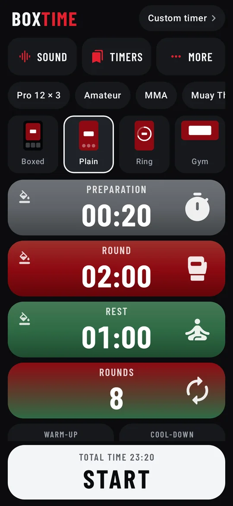
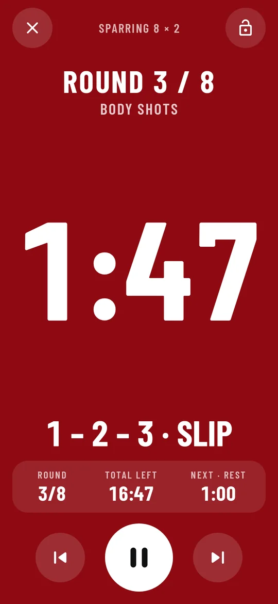
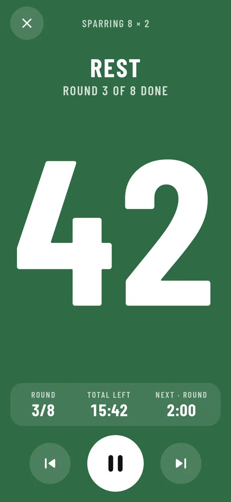
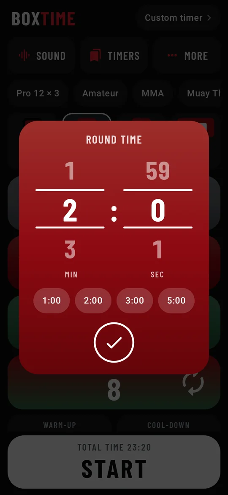
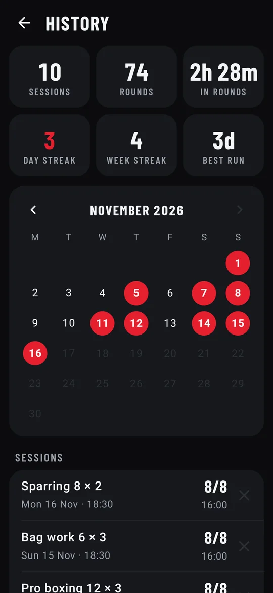
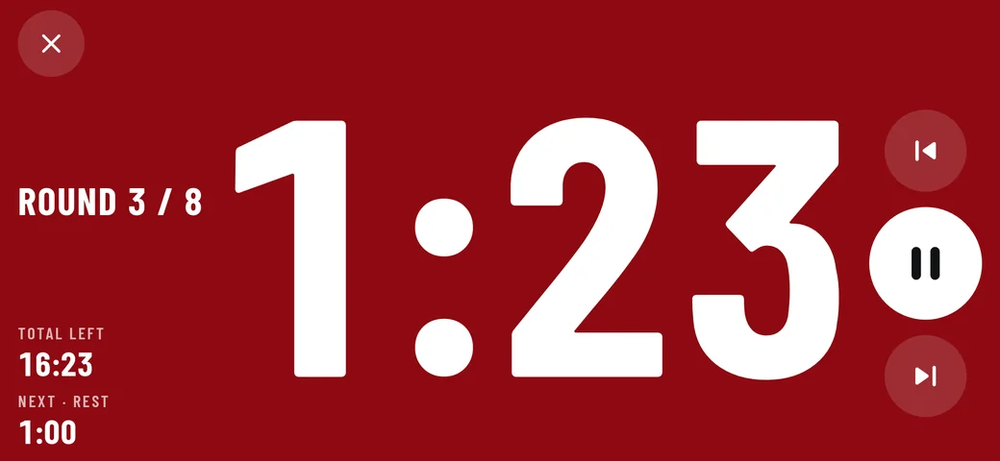

Glove up. BoxTime keeps the rounds.
BoxTime is a boxing round timer for Android. Set the round, the rest and the number of rounds, press Start, and it rings the bell, warns you ten seconds out and counts you back in, with the screen on or off.
It is free, with no adverts and nothing to unlock. There is no account, and your timers and history stay on your phone.
Free, with nothing to unlock. Android 10 or later. No ads, no accounts. Compare · Release notes
Chrome may say the file might be harmful. It shows this for app files that do not come from Google Play. Choose Download anyway.
- Round2:00Ring bell
- Warning10 seconds beforeClapper
- Rest1:00Bell × 3
- Rounds823:20 in all
- CombosIntermediate, steadyVoice
How it works
A round timer has one job: keep time so you can keep your hands up. BoxTime does that on one screen, and stays out of the way once the bell goes.
Set the session
Tap a block to change the preparation, round or rest time, or the number of rounds. Or tap a preset such as Pro 12 × 3 and everything is filled in.
Press Start
You get a countdown to get ready, three beeps, then the bell. The screen turns the colour of the round and the digits fill it.
Train
A clapper warns you before the end of the round, the bell ends it, and a tick calls you back before the rest is up. The session is logged when you finish.
What it looks like
Big colour blocks, large numbers, and nothing you need to read twice with gloves on.

One screen to set upPreparation, round, rest and rounds, with fight presets along the top. 
The roundGiant digits, the round's name and the combination being called. 
The restA different colour, so you know where you are from across the room. Ring faceThe ring empties as the round runs down. 
Quick to changeSpin the wheels or tap a ready time. 
HistorySessions, rounds, streaks and a month calendar.

Everything is in, and all of it is free
Out of the box it is a plain round timer. The rest is there for when you want it, and stays switched off until you do.
- Four timer faces
- Boxed, Plain and Ring for a phone in your hand or on a shelf, and Gym, which turns the phone sideways and makes the digits as big as the screen allows.
- Fifteen fight presets
- Pro and amateur boxing, title fights, white collar, MMA, Muay Thai, kickboxing, bag work, pad work, sparring, skipping and Tabata. Tap one and press Start.
- Bells made for the job
- Twenty-one sounds, from a ring bell and a ten-second clapper to buzzers, whistles and an air horn. All are made inside the app, and you can add a sound file of your own.
- A warning before the bell
- A signal before the end of each round, and another before the end of each rest so you are up in time. Each has its own sound and its own number of seconds.
- Spoken cues
- The phone's own voice calls the round number, the final round, rest, halfway and the seconds left. Each line has its own switch.
- Combo callouts
- Switch them on and a voice calls punch combinations by number during the round. Three levels, three paces, slips and rolls if you want them, and your own combinations.
- Round plans
- Name each round, such as jab only or body shots, and it is shown and spoken at the bell. Any round can have its own length and its own rest.
- Warm-up and cool-down
- Add a timed block before the first round and after the last. Each has its own colour on the timer.
- Screen off, still running
- The session carries on with the screen off. The lock screen shows the countdown with Pause, Skip and Finish, or keep the screen on for the whole session.
- Your music stays on
- Music dips for the bell and the voice, then comes back. It can pause instead, or be left alone.
- Made for gloves
- Make the whole screen the pause button, and add a tap-lock so a stray glove cannot stop the clock. Bells can flash the screen and buzz the phone in a loud gym.
- Saved timers
- Save as many set-ups as you like under your own names. Star the ones you use most, and start a favourite from a home-screen widget.
- History and streaks
- Every session is logged: rounds, time in rounds, a month calendar, and your day and week streaks.
- Share a timer
- Show a QR code for a training partner to scan, or send the timer as a small file. Coaches can hand a whole session to the room.
- On a TV, on your wrist
- Mirror the phone to a TV and the TV gets its own full-screen clock. A companion app for Wear OS watches shows the countdown and buzzes on the bells.
- Your colours
- Six ready themes, or pick any colour for each part of the session, so you can tell round from rest across the room.
Combinations by number
Combo callouts use the numbers most coaches call on the pads. They are off until you switch them on, in More then Combo callouts.
- 1Jab
- 2Cross
- 3Lead hook
- 4Rear hook
- 5Lead uppercut
- 6Rear uppercut
Beginner keeps to singles, doubles and the 1-2-3. Intermediate adds uppercuts and body shots. Advanced calls longer combinations, with a slip or a roll into a counter. Add your own and BoxTime mixes them in, or calls nothing else.
What it asks of your phone
BoxTime has no access to your camera, microphone, location, contacts or files, and uses what it does have only for what is listed here.
| Access | What BoxTime does with it | What it never does |
|---|---|---|
| Notifications | Shows the countdown and the Pause, Skip and Finish buttons on the lock screen while a session runs. Android asks you to allow this the first time you press Start. | Send you reminders, offers or anything else. |
| Running in the background | Keeps the clock, bells and voice going when the screen is off or another app is open, for as long as a session lasts. | Run when no session is under way. |
| Internet access | Checks GitHub for a newer version when the app opens. Lets Google's scanner fetch what it needs the first time you scan a QR code. | Send your timers, your history or anything about you anywhere. |
| Vibration | Buzzes the phone on the bells, if that switch is on. | Buzz at any other time. |
The detail is in the privacy policy.
Your training is your business
Nothing is collected
Your timers, your history and your streaks are kept on your phone. BoxTime's developer runs no servers and receives nothing.
No accounts, no adverts
There is nothing to sign up for and no advertising in the app. This site has no cookies and no tracking.
Works without a signal
A session needs no internet at all, so it works the same in a basement gym as it does at home.
Free, without the adverts
BoxTime has no paid version and carries no adverts. Going by their makers' own Google Play listings, the best-known boxing timers on Android all contain ads.
- No adverts
- Boxing Interval Timer by Brucemax, Boxing Round Interval Timer by Net Income Apps and Boxing Timer by Martin Machata each say on their Google Play listings that they contain ads.
- More than a bell
- Combo callouts, a lock-screen countdown, history with streaks, sharing by QR code and a watch companion are not mentioned in any of those three listings.
- Nothing to unlock
- Every sound, every timer face and every feature is in the one free app.
- Stays on the phone
- BoxTime needs no internet to run a session, and nothing about your training is sent anywhere.
Questions
Is BoxTime really free?
Yes. There is no paid version, no subscription and no adverts, and nothing in the app is locked. See the comparison.
Is BoxTime on Google Play?
No. BoxTime is a personal project and is downloaded from this site as an Android app file. It needs Android 10 or later, which covers almost every phone sold in recent years.
Does it keep going with the screen off?
Yes. The session runs in the background, the bells and voice still play, and the lock screen shows the countdown with Pause, Skip and Finish. By default the screen stays on while a session runs; a switch in Settings lets it sleep.
Will it stop my music?
No. By default your music dips for the bell and the voice and then comes back. You can have it pause for a moment instead, or leave it alone so the bells play over the top.
Does it need the internet?
No. Everything in a session works offline. BoxTime uses the internet only to check for a newer version when it opens, and the first time you open the QR scanner. The detail is in the privacy policy.
What do the combo numbers mean?
1 is the jab, 2 the cross, 3 the lead hook, 4 the rear hook, 5 the lead uppercut and 6 the rear uppercut. Body after a number sends that punch to the body. Lead means your front hand, so the numbers work for either stance.
Can I use my own bell?
Yes. In Sound, open any signal, choose Add your own sound and pick an audio file from your phone. It is copied into the app, so it still works if you move or delete the original.
How do I put the timer on a TV?
Mirror your phone to the TV, with Smart View on a Samsung phone or with a cable, then start a session. The TV shows its own full-screen clock in the colour of the round or the rest. There is nothing to set up.
Is there a watch app?
Yes, for Wear OS watches such as a Galaxy Watch 4 or later. It shows the countdown, buzzes on the bells and has back, pause and skip buttons. It is a separate download, and because it is not on Google Play it is put on the watch over Wi-Fi. The steps are in the release notes.
How do I move my timers to a new phone?
In Settings, choose Save a backup file. It holds your timers, history and settings in one file. Send it to the new phone, install BoxTime there and choose Restore from a backup file.
How do I update BoxTime?
BoxTime tells you when it opens if a newer version is out. Download it from this site and install it over the one you have. Your timers, history and settings are kept.
Getting BoxTime
BoxTime is a personal project and is free, with no paid version. It is downloaded from this site as an Android app file and is not on Google Play. It runs on phones and tablets with Android 10 or later.
When you download, Chrome may warn that the file might be harmful. It shows this warning for app files that do not come from Google Play; choose Download anyway. If you want to be sure the file is the real one, compare it with the checksum in the release notes.
Open the downloaded file to install it. The first time, Android asks you to allow your browser to install apps. Google Play Protect may also step in, because BoxTime is an app it has not seen before: choose More details, then Install anyway. To update, install the latest version over the one you have: your timers, history and settings are kept. What changed in each version is in the release notes.
BoxTime keeps time. It is not a coach and it is not medical advice, so train within your limits and stop if you feel unwell.
The same developer makes other free Android apps. For a question, a problem, or anything about your data, open an issue on GitHub.